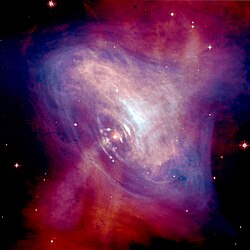
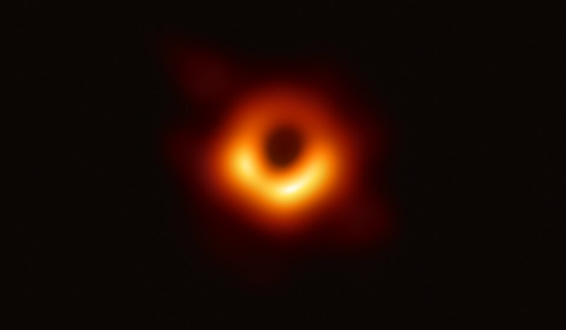
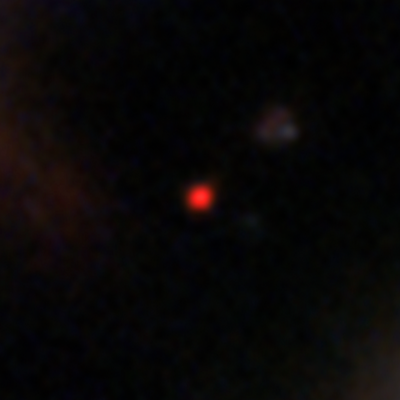

1. Quasar

A quasar (/ˈkweɪzɑːr/ KWAY-zar) is an extremely luminous active galactic nucleus (AGN). It is sometimes known as a quasi-stellar object, abbreviated QSO. The emission from an AGN is powered by accretion onto a supermassive black hole with a mass ranging from millions to tens of billions of solar masses, surrounded by a gaseous accretion disc. Gas in the disc falling towards the black hole heats up and releases energy in the form of electromagnetic radiation. The radiant energy of quasars is enormous; the most powerful quasars have luminosities thousands of times greater than that of a galaxy such as the Milky Way.[2][3] Quasars are usually categorized as a subclass of the more general category of AGN. The redshifts of quasars are of cosmological origin.
The term quasar originated as a contraction of "quasi-stellar [star-like] radio source"—because they were first identified during the 1950s as sources of radio-wave emission of unknown physical origin—and when identified in photographic images at visible wavelengths, they resembled faint, star-like points of light
Current understanding
It is now known that quasars are distant but extremely luminous objects, so any light that reaches the Earth is redshifted due to the expansion of the universe.
Quasars inhabit the centers of active galaxies and are among the most luminous, powerful, and energetic objects known in the universe, emitting up to a thousand times the energy output of the Milky Way, which contains 200–400 billion stars. This radiation is emitted across the electromagnetic spectrum almost uniformly, from X-rays to the far infrared, with a peak in the ultraviolet optical bands, with some quasars also being strong sources of radio emission and of gamma-rays. With high-resolution imaging from ground-based telescopes and the Hubble Space Telescope, the "host galaxies" surrounding the quasars have been detected in some cases.[39] These galaxies are normally too dim to be seen against the glare of the quasar, except with special techniques. Most quasars, except 3C 273, whose average apparent magnitude is 12.9, cannot be seen with small telescopes.
Quasars are believed—and in many cases confirmed—to be powered by accretion of material into supermassive black holes in the nuclei of distant galaxies, as suggested in 1964 by Edwin Salpeter and Yakov Zeldovich.[15] Light and other radiation cannot escape from within the event horizon of a black hole. The energy produced by a quasar is generated outside the black hole, by gravitational stresses and immense friction within the material nearest to the black hole, as it orbits and falls inward.[32] The huge luminosity of quasars results from the accretion discs of central supermassive black holes, which can convert between 5.7% and 32% of the mass of an object into energy,[40] compared to just 0.7% for the p–p chain nuclear fusion process that dominates the energy production in Sun-like stars. Central masses of 105 to 109 solar masses have been measured in quasars by using reverberation mapping. Several dozen nearby large galaxies, including the Milky Way galaxy, that do not have an active center and do not show any activity similar to a quasar, are confirmed to contain a similar supermassive black hole in their nuclei (galactic center). Thus, it is now thought that all large galaxies have a black hole of this kind, but only a small fraction have sufficient matter in the right kind of orbit at their center to become active and power radiation in such a way as to be seen as quasars.
Properties
More than 900,000 quasars have been found (as of July 2023),[6] most from the Sloan Digital Sky Survey. All observed quasar spectra have redshifts between 0.056 and 10.1 (as of 2024), which means they range from 600 million to 30 billion light-years away from Earth. Because of the great distances to the farthest quasars and the finite velocity of light, they and their surrounding space appear as they existed in the very early universe. The power of quasars originates from supermassive black holes believed to exist at the core of most galaxies. The Doppler shifts of stars near the cores of galaxies indicate that they are revolving around tremendous masses with very steep gravity gradients, suggesting black holes.
Although quasars appear faint when viewed from Earth, they are visible from extreme distances, being the most luminous objects in the known universe. The brightest quasar in the sky is 3C 273 in the constellation of Virgo. It has an average apparent magnitude of 12.8 (bright enough to be seen through a medium-sized amateur telescope), but it has an absolute magnitude of −26.7.[24] From a distance of about 33 light-years, this object would shine in the sky about as brightly as the Sun. This quasar's luminosity is, therefore, about 4 trillion (4×1012) times that of the Sun, or about 100 times that of the total light of giant galaxies like the Milky Way.[24] This assumes that the quasar is radiating energy in all directions, but the active galactic nucleus is believed to be radiating preferentially in the direction of its jet. In a universe containing hundreds of billions of galaxies, most of which had active nuclei billions of years ago but only seen today, it is statistically certain that thousands of energy jets should be pointed toward the Earth, some more directly than others. In many cases it is likely that the brighter the quasar, the more directly its jet is aimed at the Earth. Such quasars are called blazars.
Spectral lines, reionization, and the early universe
Quasars also provide some clues as to the end of the Big Bang's reionization. The oldest known quasars (z = 6)[needs update] display a Gunn–Peterson trough and have absorption regions in front of them, indicating that the intergalactic medium at that time was neutral gas. More recent quasars show no absorption region, but rather their spectra contain a spiky area known as the Lyman-alpha forest; this indicates that the intergalactic medium has undergone reionization into plasma, and that neutral gas exists only in small clouds.
The intense production of ionizing ultraviolet radiation is also significant, as it would provide a mechanism for reionization to occur as galaxies form. Despite this, current theories suggest that quasars were not the primary source of reionization; the primary causes of reionization were probably the earliest generations of stars, known as population III stars (possibly 70%), and dwarf galaxies (very early small high-energy galaxies) (possibly 30%).[54][55][56][57][58][59] Quasars show evidence of elements heavier than helium, indicating that galaxies underwent a massive phase of star formation, creating population III stars between the time of the Big Bang and the first observed quasars. Light from these stars may have been observed in 2005 using NASA's Spitzer Space Telescope,[60] although this observation remains to be confirmed.
Quasars are believed—and in many cases confirmed—to be powered by accretion of material into supermassive black holes in the nuclei of distant galaxies, as suggested in 1964 by Edwin Salpeter and Yakov Zeldovich.[15] Light and other radiation cannot escape from within the event horizon of a black hole. The energy produced by a quasar is generated outside the black hole, by gravitational stresses and immense friction within the material nearest to the black hole, as it orbits and falls inward.[32] The huge luminosity of quasars results from the accretion discs of central supermassive black holes, which can convert between 5.7% and 32% of the mass of an object into energy,[40] compared to just 0.7% for the p–p chain nuclear fusion process that dominates the energy production in Sun-like stars. Central masses of 105 to 109 solar masses have been measured in quasars by using reverberation mapping. Several dozen nearby large galaxies, including the Milky Way galaxy, that do not have an active center and do not show any activity similar to a quasar, are confirmed to contain a similar supermassive black hole in their nuclei (galactic center). Thus, it is now thought that all large galaxies have a black hole of this kind, but only a small fraction have sufficient matter in the right kind of orbit at their center to become active and power radiation in such a way as to be seen as quasars.
2. Pulsar

A pulsar (pulsating star, on the model of quasar)[1] is a highly magnetized rotating neutron star that emits beams of electromagnetic radiation out of its magnetic poles.[2] This radiation can be observed only when a beam of emission is pointing toward Earth (similar to the way a lighthouse can be seen only when the light is pointed in the direction of an observer), and is responsible for the pulsed appearance of emission. Neutron stars are very dense and have short, regular rotational periods. This produces a very precise interval between pulses that ranges from milliseconds to seconds for an individual pulsar. Pulsars are one of the candidates for the source of ultra-high-energy cosmic rays (see also centrifugal mechanism of acceleration).
Due to its proximity to its star, 55 Cancri Ae is extremely hot, Pulsars' highly regular pulses make them very useful tools for astronomers. For example, observations of a pulsar in a binary neutron star system were used to indirectly confirm the existence of gravitational radiation. The first extrasolar planets were discovered in 1992 around a pulsar, specifically PSR B1257+12. In 1983, certain types of pulsars were detected that, at that time, exceeded the accuracy of atomic clocks in keeping time.
Formation, mechanism, turn off
The events leading to the formation of a pulsar begin when the core of a massive star is compressed during a supernova, which collapses into a neutron star. The neutron star retains most of its angular momentum, and since it has only a tiny fraction of its progenitor's radius, it is formed with very high rotation speed. A beam of radiation is emitted along the magnetic axis of the pulsar, which spins along with the rotation of the neutron star. The magnetic axis of the pulsar determines the direction of the electromagnetic beam, with the magnetic axis not necessarily being the same as its rotational axis. This misalignment causes the beam to be seen once for every rotation of the neutron star, which leads to the "pulsed" nature of its appearance.
n rotation-powered pulsars, the beam is the result of the rotational energy of the neutron star, which generates an electrical field and very strong magnetic field, resulting in the acceleration of protons and electrons on the star surface and the creation of an electromagnetic beam emanating from the poles of the magnetic field.[39][40] Observations by NICER of PSR J0030+0451 indicate that both beams originate from hotspots located on the south pole and that there may be more than two such hotspots on that star.[41][2] This rotation slows down over time as electromagnetic power is emitted. When a pulsar's spin period slows down sufficiently, the radio pulsar mechanism is believed to turn off (the so-called "death line"). This turn-off seems to take place after about 10–100 million years, which means of all the neutron stars born in the 13.6-billion-year age of the universe, around 99% no longer pulsate.
Disrupted recycled pulsar
When two massive stars are born close together from the same cloud of gas, they can form a binary system and orbit each other from birth. If those two stars are at least a few times as massive as the Sun, their lives will both end in supernova explosions. The more massive star explodes first, leaving behind a neutron star. If the explosion does not kick the second star away, the binary system survives. The neutron star can now be visible as a radio pulsar, and it slowly loses energy and spins down. Later, the second star can swell up, allowing the neutron star to suck up its matter. The matter falling onto the neutron star spins it up and reduces its magnetic field.
This is called "recycling" because it returns the neutron star to a quickly-spinning state. Finally, the second star also explodes in a supernova, producing another neutron star. If this second explosion also fails to disrupt the binary, a double neutron star (neutron star binary) is formed. Otherwise, the spun-up neutron star is left with no companion and becomes a "disrupted recycled pulsar", spinning between a few and 50 times per second.
Precise clocks
enerally, the regularity of pulsar emission does not rival the stability of atomic clocks.[52] They can still be used as external reference.[53] For example, J0437−4715 has a period of 0.005757451936712637 s with an error of 1.7×10−17 s. This stability allows millisecond pulsars to be used in establishing ephemeris time[54] or in building pulsar clocks
iming noise is the name for rotational irregularities observed in all pulsars. This timing noise is observable as random wandering in the pulse frequency or phase.[56] It is unknown whether timing noise is related to pulsar glitches. According to a study published in 2023,[57] the timing noise observed in pulsars is believed to be caused by background gravitational waves. Alternatively, it may be caused by stochastic fluctuations in both the internal (related to the presence of superfluids or turbulence) and external (due to magnetospheric activity) torques in a pulsar.
3. Supermassive black hole

A supermassive black hole (SMBH or sometimes SBH)[a] is the largest type of black hole, with its mass being on the order of hundreds of thousands, or millions to billions, of times the mass of the Sun (M☉). Black holes are a class of astronomical objects that have undergone gravitational collapse, leaving behind spheroidal regions of space that nothing, not even light, can escape. Observational evidence indicates that almost every large galaxy has a supermassive black hole at its center.[3][4] For example, the Milky Way galaxy has a supermassive black hole at its center, corresponding to the radio source Sagittarius A*.[5][6] Accretion of interstellar gas onto supermassive black holes is the process responsible for powering active galactic nuclei (AGNs) and quasars.
Two supermassive black holes have been directly imaged by the Event Horizon Telescope; these are Sagittarius A*, at the center of the Milky Way, and the black hole at the center of Messier 87, a giant elliptical galaxy.
Formation
he origin of supermassive black holes remains an active field of research. Astrophysicists agree that black holes can grow by accretion of matter and by merging with other black holes.[39][40] There are several hypotheses for the formation mechanisms and initial masses of the progenitors, or "seeds", of supermassive black holes. Independently of the specific formation channel for the black hole seed, given sufficient mass nearby, it could accrete to become an intermediate-mass black hole and possibly an SMBH if the accretion rate persists.
Distant and early supermassive black holes, such as J0313–1806,[42] and ULAS J1342+0928,[43] are hard to explain so soon after the Big Bang. Some postulate they might come from direct collapse of dark matter with self-interaction.[44][45][46] A study published 6 August 2025 identifies CAPERS-LRD-z9 as the most distant supermassive black hole at redshift z = 9.288 ± 0.003, existing when the universe was 3% of its present age.[
Direct-collapse and primordial black holes
Large, high-redshift clouds of metal-free gas,[53] when irradiated by a sufficiently intense flux of Lyman–Werner photons,[54] can avoid cooling and fragmenting, thus collapsing as a single object due to self-gravitation.[55][56] The core of the collapsing object reaches extremely large values of matter density, of the order of about 107 g/cm3, and triggers a general relativistic instability.[57] Thus, the object collapses directly into a black hole, without passing from the intermediate phase of a star, or of a quasi-star. These objects have a typical mass of about 100,000 M☉ and are named direct collapse black holes.[58] A 2022 computer simulation showed that the first supermassive black holes can arise in rare turbulent clumps of gas, called primordial halos, that were fed by unusually strong streams of cold gas. The key simulation result was that cold flows suppressed star formation in the turbulent halo until the halo's gravity was finally able to overcome the turbulence and formed two direct-collapse black holes of 31,000 M☉ and 40,000 M☉. The birth of the first SMBHs can therefore be a result of standard cosmological structure formation.
Primordial black holes (PBHs) could have been produced directly from external pressure in the first moments after the Big Bang. These black holes would then have more time than any of the above models to accrete, allowing them sufficient time to reach supermassive sizes. Formation of black holes from the deaths of the first stars has been extensively studied and corroborated by observations. The other models for black hole formation listed above are theoretical. The formation of a supermassive black hole requires a relatively small volume of highly dense matter having small angular momentum. Normally, the process of accretion involves transporting a large initial endowment of angular momentum outwards, and this appears to be the limiting factor in black hole growth. This is a major component of the theory of accretion disks. Gas accretion is both the most efficient and the most conspicuous way in which black holes grow. The majority of the mass growth of supermassive black holes is thought to occur through episodes of rapid gas accretion, which are observable as active galactic nuclei or quasars. Observations reveal that quasars were much more frequent when the Universe was younger, indicating that supermassive black holes formed and grew early. A major constraining factor for theories of supermassive black hole formation is the observation of distant luminous quasars, which indicate that supermassive black holes of billions of M☉ had already formed when the Universe was less than one billion years old. This suggests that supermassive black holes arose very early in the Universe, inside the first massive galaxies.
Maximum mass limit
There is a natural upper limit to how large supermassive black holes can grow. Supermassive black holes in any quasar or active galactic nucleus (AGN) appear to have a theoretical upper limit of physically around 50 billion M☉ for typical parameters, as anything above this slows growth down to a crawl (the slowdown tends to start around 10 billion M☉) and causes the unstable accretion disk surrounding the black hole to coalesce into stars that orbit it.[19][65][66][67] A study concluded that the radius of the innermost stable circular orbit (ISCO) for SMBH masses above this limit exceeds the self-gravity radius, making disc formation no longer possible.[19] A larger upper limit of around 270 billion M☉ was represented as the absolute maximum mass limit for an accreting SMBH in extreme cases, for example its maximal prograde spin with a dimensionless spin parameter of a = 1,[22][19] although the maximum limit for a black hole's spin parameter is very slightly lower at a = 0.9982.[68] At masses just below the limit, the disc luminosity of a field galaxy is likely to be below the Eddington limit and not strong enough to trigger the feedback underlying the M–sigma relation, so SMBHs close to the limit can evolve above this.
t has been noted that black holes close to this limit are likely to be rather even rarer, as it would require the accretion disc to be almost permanently prograde because the black hole grows and the spin-down effect of retrograde accretion is larger than the spin-up by prograde accretion, due to its ISCO and therefore its lever arm.[19] This would require the hole spin to be permanently correlated with a fixed direction of the potential controlling gas flow, within the black hole's host galaxy, and thus would tend to produce a spin axis and hence AGN jet direction, which is similarly aligned with the galaxy. Current observations do not support this correlation.[19] The so-called 'chaotic accretion' presumably has to involve multiple small-scale events, essentially random in time and orientation if it is not controlled by a large-scale potential in this way.[19] This would lead the accretion statistically to spin-down, due to retrograde events having larger lever arms than prograde, and occurring almost as often.[19] There are also other interactions with large SMBHs that trend to reduce their spin, including particularly mergers with other black holes, which can statistically decrease the spin.[19] All of these considerations suggested that SMBHs usually cross the critical theoretical mass limit at modest values of their spin parameters, so that 5×1010 M☉ in all but rare cases.[19] Although modern UMBHs within quasars and galactic nuclei cannot grow beyond around (5–27)×1010 M☉ through the accretion disk and as well given the current age of the universe, some of these monster black holes in the universe are predicted to still continue to grow up to stupendously large masses of perhaps 1014 M☉ during the collapse of superclusters of galaxies in the extremely far future of the universe.
4. Ring galaxy

ring galaxy is a type of galaxy that includes a large annular structure. The galactic center may be relatively separate from the ring structure, or present a continuous disc shape. Hoag's Object, discovered by Arthur Hoag in 1950, is an example of a ring galaxy.[1] The ring contains many massive, relatively young blue stars, which are extremely bright. The central region contains relatively little luminous matter. Some astronomers believe that ring galaxies are formed when a smaller galaxy passes through the center of a larger galaxy. Because most of a galaxy consists of empty space, this "collision" rarely results in any actual collisions between stars. However, the gravitational disruptions caused by such an event could cause a wave of star formation to move through the larger galaxy.[2] Other astronomers think that rings are formed around some galaxies when external accretion takes place. Star formation would then take place in the accreted material because of the shocks and compressions of the accreted material.
Formation theories
All of the processes that form ring galaxies appear to cause significant effects on stellar populations. Based on observations of the spectrum of the ring structures, there appears to be very high star formation rates caused by the outwards pressure wave.[5] The regions also have very high metallicities, supporting the idea of a significant amount of evolution of the stellar population within the ring.[6] The methods ring galaxies are theorized to be formed through include, but are not limited to, the scenarios listed below:
Bar instability
A phenomenon where the rotational velocity of the bar in a barred spiral galaxy increases to the point of spiral spin-out. Under typical conditions, gravitational density waves would favor the creation of spiral arms. When the bar is unstable, these density waves are instead migrated out into a ring-structure by the pressure, force, and gravitational influence of the baryonic and dark matter furiously orbiting about the bar. This migration forces the stars, gas and dust found within the former arms into a torus-like region, forming a ring, and often igniting star formation.
Galaxies with this structure have been found where the bar dominates, and essentially "carves out" the ring of the disc as it rotates. Oppositely, ring galaxies have been found where the bar has collapsed or disintegrated into a highly-flattened bulge. Other instabilities have been predicted due to asymmetries caused by spiral arms, which creates a net torque depending on the pattern of the bar. This torque creates a resonance instability that drives matter from the arms both outwards and inwards towards the core, creating the distinct ring and core structure.[7] Despite this, observations suggest that bars, rings and spiral arms have the ability to fall apart and reform over the span of hundreds of millions of years, particularly in dense intergalactic environments, such as galaxy groups and clusters, where gravitational influences are more likely to play a role in the morphological and physical evolution of a galaxy without the influence of collisions and mergers.
Galactic collisions
Another observed way that ring galaxies can form is through the process of two or more galaxies colliding. The Cartwheel Galaxy, galaxy pair AM 2026-424, and Arp 147 are all examples of ring galaxies thought to be formed by this process.[7] In pass-through galactic collisions, or bullseye collisions, an often smaller donor galaxy will pass directly through the disc of an often larger spiral, causing an outward push of the arms from the gravity of the smaller galaxy, as if dropping a rock into a pond of still water. These collisions can either launch the bulge and core away from the main disk, creating an almost empty ring appearance as the shockwave pushes the spiral arms out, or shove the core out towards the disk, often creating an oval-shaped ring with the bulge still somewhat intact.[8] In side-swipe and head-on collisions, the appearance of a perfect ring are less likely, with chaotic and warped appearances dominating. In these collisional galaxy systems, the individual galaxies that made up the ring system are often still observable.[7] Rings formed through collision processes are believed to be transient features of the affected galaxies, lasting only a few ten to hundred million years (a relatively short timeframe considering some mergers can take over a billion years to complete) before disintegrating, reforming into spiral arms, or succumbing to further disturbance from gravitational influence.
Ring accretion
This method has been inferred through the existence of Hoag's object, along with UV observations of several other large and ultra-large super spiral galaxies and current formation theories of spiral galaxies. UV-light observations show several cases of faint, ring-like and spiral structures of hot young stars that have formed along the network of cooled inflowing gas, extending far from the visible luminous galactic disc. If conditions are favorable, a ring can form in the place of a spiral structure. Polar-ring galaxies may form through cold accretion, as gas from the galaxy filament flows into the disk and halo regions of a galaxy early in evolution. Resulting star formation interferes with the formation of spiral structures in the stellar disk, and a stable ring structure is created. Similarly, pre-existing elliptical galaxies may also experience cold accretion and result in polar-ring galaxies.[10] Since some spiral galaxies are theorized to have formed from massive clouds of intergalactic gas collapsing and then rotationally forming into a disc structure, one could assume that a ring disc could form in place of a spiral disc if, as mentioned before, conditions are favorable. This holds true for protogalaxies, or galaxies just throughout to be forming, and old galaxies that have migrated into a section of space with a higher gas content than its previous locations. Tidal accretion Besides intergalactic medium accretion, tidal interactions between a gas-rich host galaxy and a donor galaxy in a polar orbit may lead to the formation of polar-ring galaxies. Observations indicate that rings formed through accretion have a greater inclination angle, compared to rings formed through merging galaxies, as some angular momentum from the gas of the donor galaxy is lost through dispersion; consequentially, the inclination angle is allowed to deviate from the donor. The accretion model is particularly insightful for galaxies with rings that intersect with the central portion's poles, as opposed to lying along the same orbital plane.[11]
5. JADES-GS-z13-1 (High Red Shift Galaxy)

JADES-GS-z13-1 or JADES-GS-z13-1-LA (also known as JADES-GS+53.06475-27.89024) is a high-redshift Lyman-Break galaxy in the constellation Fornax that was observed with the NIRSpec instrument of the James Webb Space Telescope (JWST) between 10 and 12 January 2024 as part of the JWST Advanced Deep Extragalactic Survey (JADES) and JADES Origins Field (JOF) programmes.
It has a redshift of 13.01+0.02 −0.01[1], making it one of the most distant galaxies discovered. According to current theory, this redshift corresponds to a time about 13.47 billion years ago, approximately 330 million years after the Big Bang, or about 2,4% of its current age.
ADES-GS-z13-1-LA and the onset of reionization
Cosmic reionization began when ultraviolet (UV) radiation produced in the first galaxies began illuminating the cold, neutral gas that filled the primordial Universe. The spectroscopy of JADES-GS-z13-1-LA reveals a singular, bright emission line unambiguously identified as Lyman-α, as well as a smooth turnover.
Smooth turnover of the UV continua has been interpreted as damping-wing absorption of Lyman-α (Ly-α), the principal hydrogen transition.[2] It is observed in JADES-GS-z13-1-LA an equivalent width of EW Ly-α > 40 Å (rest frame), previously only seen at z < 9 where the intervening intergalactic medium becomes increasingly ionized.[3] Together with an extremely blue UV continuum, the unexpected Ly-α emission indicates that the galaxy is a prolific producer and leaker of ionizing photons. This suggests that massive, hot stars or an active galactic nucleus have created an early reionized region to prevent complete extinction of Ly-α.[1] Whether the Ly-α emission of JADES-GS-z13-1-LA originates in stars or a supermassive black hole, it reveals the rather extreme character of one of the earliest galaxies known, despite having been found in a modest survey area examining a comoving volume of 50,000 Mpc3 between z = 11 and z = 15.[1] At only 330 Myr after the Big Bang, the probable presence of a reionized region around this relatively UV-faint source readily constrains the timeline of cosmic reionization, favouring an early and gradual process driven (initially) by low-mass galaxies.
6. Abell 2744 (Galaxy Cluster)

Abell 2744, nicknamed Pandora's Cluster, is a giant galaxy cluster resulting from the simultaneous pile-up of at least four separate, smaller galaxy clusters that took place over a span of 350 million years, and is located approximately 4 billion light years from Earth.[1] The galaxies in the cluster make up less than five percent of its mass.[1] The gas (around 20 percent) is so hot that it shines only in X-rays.[1] Dark matter makes up around 75 percent of the cluster's mass.[1] This cluster also shows a radio halo along with several other Abell clusters. It has a strong central halo, along with an extended tail, which could either be relic radiation, or an extension of the central halo.
Renato Dupke, a member of the team that discovered the Cluster, explained the origin of the name in an interview: "We nicknamed it ‘Pandora's Cluster’ because so many different and strange phenomena were unleashed by the collision."
Structure
Abell 2744 is a highly dynamic and massive galaxy cluster, with gravitational lensing analyses and X-ray imaging identifying eight massive substructures in an ongoing merger between North and South subclusters, with a minor interloper falling inward from the Northwest.[6][7] The major North-South merger is seen head-on, mostly out of the plane of the sky, with the southern subcluster in front of the northern subcluster.[7] The number of massive substructures is unusually high for galaxy clusters, and indicates the cluster is undergoing a period of intense change in its formation.[6] Its structure and features could give insights about how galaxies aggregate into clusters, the latest stage in ΛCDM cosmology.
As an example, a 2025 analysis searching for starburst galaxies using the emission spectrum of polycyclic aromatic hydrocarbons (PAH), compounds which are associated with high rates of star formation,[9] found that almost all the star-forming galaxies in the cluster were in low-density areas on the outer edges of the cluster, suggesting star-forming galaxies are quenched as they fall into a cluster and ram pressure strips them of gas and dust.[
Deep-field observations
Merging galaxy clusters are some of the strongest gravitational lenses in the universe,[11] magnifying the light of distant objects from up to 12 billion light years ago, when the first stars and galaxies were forming.[8] As one such merging cluster, many deep field images have been taken of Abell 2744 in an effort to use the lensing effect to discover extremely distant and old astronomical objects. These observations include projects like UNCOVER on the James Webb Space Telescope, Hubble Frontier Fields on the Hubble Space Telescope, and X-ray imaging of the cluster by the Chandra X-Ray Observatory. Notable discoveries in the cluster's region of the sky include the most distant known quasar, UHZ1, and the distant galaxies UNCOVER-z12 and UNCOVER-z13.